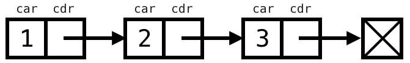

Lab 12: Scheme Lists, Interpreters
Due by 11:59pm on Wednesday, April 19.
Starter Files
Download lab12.zip. Inside the archive, you will find starter files for the questions in this lab, along with a copy of the Ok autograder.
Topics
Consult this section if you need a refresher on the material for this lab. It's okay to skip directly to the questions and refer back here should you get stuck.
Scheme Lists
As you read through this section, it may be difficult to understand the differences between the various representations of Scheme containers. We recommend that you use our online Scheme interpreter to see the box-and-pointer diagrams of pairs and lists that you're having a hard time visualizing! (Use the command
(autodraw)to toggle the automatic drawing of diagrams.)
Lists
Scheme lists are very similar to the linked lists we've been working with in
Python. Just like how a linked list is constructed of a series of Link
objects, a Scheme list is constructed with a series of pairs, which are created
with the constructor cons.
Scheme lists require that the cdr is either another list or nil, an empty list.
A list is displayed in the interpreter as a sequence of values (similar to the
__str__ representation of a Link object). For example,
scm> (cons 1 (cons 2 (cons 3 nil)))
(1 2 3)Here, we've ensured that the second argument of each cons expression is
another cons expression or nil.

We can retrieve values from our list with the car and cdr procedures, which
now work similarly to the Python Link's first and rest attributes.
(Curious about where these weird names come from? Check out their
etymology.)
scm> (define a (cons 1 (cons 2 (cons 3 nil)))) ; Assign the list to the name a
a
scm> a
(1 2 3)
scm> (car a)
1
scm> (cdr a)
(2 3)
scm> (car (cdr (cdr a)))
3If you do not pass in a pair or nil as the second argument to cons, it will
error:
scm> (cons 1 2)
Errorlist Procedure
There are a few other ways to create lists. The list procedure takes in an
arbitrary number of arguments and constructs a list with the values of these
arguments:
scm> (list 1 2 3)
(1 2 3)
scm> (list 1 (list 2 3) 4)
(1 (2 3) 4)
scm> (list (cons 1 (cons 2 nil)) 3 4)
((1 2) 3 4)Note that all of the operands in this expression are evaluated before being put into the resulting list.
Quote Form
We can also use the quote form to create a list, which will construct the exact
list that is given. Unlike with the list procedure, the argument to ' is
not evaluated.
scm> '(1 2 3)
(1 2 3)
scm> '(cons 1 2) ; Argument to quote is not evaluated
(cons 1 2)
scm> '(1 (2 3 4))
(1 (2 3 4))Built-In Procedures for Lists
There are a few other built-in procedures in Scheme that are used for lists. Try them out in the interpreter!
scm> (null? nil) ; Checks if a value is the empty list
True
scm> (append '(1 2 3) '(4 5 6)) ; Concatenates two lists
(1 2 3 4 5 6)
scm> (length '(1 2 3 4 5)) ; Returns the number of elements in a list
5Interpreters
An interpreter is a program that allows you to interact with the computer in a certain language. It understands the expressions that you type in through that language, and performs the corresponding actions in some way, usually using an underlying language.
In Project 4, you will use Python to implement an interpreter for Scheme. The Python interpreter that you've been using all semester is written (mostly) in the C programming language. The computer itself uses hardware to interpret machine code (a series of ones and zeros that represent basic operations like adding numbers, loading information from memory, etc).
When we talk about an interpreter, there are two languages at work:
- The language being interpreted/implemented. In this lab, you will implement the PyCombinator language.
- The underlying implementation language. In this lab, you will use Python to implement the PyCombinator language.
Note that the underlying language need not be different from the implemented language. In fact, in this lab we are going to implement a smaller version of Python (PyCombinator) using Python! This idea is called Metacircular Evaluation.
Many interpreters use a Read-Eval-Print Loop (REPL). This loop waits for user input, and then processes it in three steps:
Read: The interpreter takes the user input (a string) and passes it through a lexer and parser.
- The lexer turns the user input string into atomic pieces (tokens) that are like "words" of the implemented language.
The parser takes the tokens and organizes them into data structures that the underlying language can understand.
Eval: Mutual recursion between eval and apply evaluate the expression to obtain a value.
- Eval takes an expression and evaluates it according to the rules of the
language. Evaluating a call expression involves calling
applyto apply an evaluated operator to its evaluated operands. Apply takes an evaluated operator, i.e., a function, and applies it to the call expression's arguments. Apply may call
evalto do more work in the body of the function, soevalandapplyare mutually recursive.
- Eval takes an expression and evaluates it according to the rules of the
language. Evaluating a call expression involves calling
- Print: Display the result of evaluating the user input.
Here's how all the pieces fit together:
+-------------------------------- Loop -----------+
| |
| +-------+ +--------+ +-------+ +-------+ |
Input ---+->| Lexer |-->| Parser |-->| Eval |-->| Print |-+--> Output
| +-------+ +--------+ +-------+ +-------+ |
| ^ | |
| | v |
^ +-------+ v
| | Apply | |
| REPL +-------+ |
+-------------------------------------------------+Getting Started Videos
These videos may provide some helpful direction for tackling the coding problems on this assignment.
To see these videos, you should be logged into your berkeley.edu email.
Required Questions
Scheme Lists
Q1: Substitute
Write a procedure substitute that takes three arguments: a list s, an old
word, and a new word. It returns a list with the elements of s, but with
every occurrence of old replaced by new, even within sub-lists.
Hint: The built-in pair? predicate returns True if its argument is a cons
pair.
Hint: The = operator will only let you compare numbers, but using equal?
or eqv? will let you compare symbols as well as numbers. For more information,
check out the Scheme Built-in Procedure Reference.
(define (substitute s old new)
'YOUR-CODE-HERE
)Use Ok to test your code:
python3 ok -q substituteCalculator
An interpreter is a program that understands other programs. Today, we will explore how to build an interpreter for Calculator, a simple language that uses a subset of Scheme syntax.
The Calculator language includes only the four basic arithmetic operations: +, -, *, and /. These operations can be nested and can take any numbers of arguments. A few examples of calculator expressions and their corresponding values are shown below.
calc> (+ 2 2)
4
calc> (- 5)
-5
calc> (* (+ 1 2) (+ 2 3))
15The reader component of an interpreter parses input strings and represents them as data structures in the implementing language. In this case, we need to represent Calculator expressions as Python objects. To represent numbers, we can just use Python numbers. To represent the names of the arithmetic procedures, we can use Python strings (e.g. '+').
To represent Scheme lists in Python, we will use the Pair class. A Pair instance holds exactly two elements. Accordingly, the Pair constructor takes in two arguments, and to make a list we must nest calls to the constructor and pass in nil as the second element of the last pair. Note that in the Python code, nil is bound to a special user-defined object that represents an empty list, whereas nil in Scheme is actually an empty list.
For example, once our interpreter reads the Scheme expression (+ 2 3), we will tokenize each operator and operand to return the equivalent Pair representation, Pair('+', Pair(2, Pair(3, nil))).
Each Pair instance has two instance attributes: first and rest, which are bound to the first and second elements of the pair respectively.
>>> p = Pair('+', Pair(2, Pair(3, nil)))
>>> p.first
'+'
>>> p.rest
Pair(2, Pair(3, nil))
>>> p.rest.first
2Pair is very similar to Link, the class we developed for representing linked lists -- they have the same attribute names first and rest and are represented very similarly.
Here's an implementation of what we described:
class Pair:
"""Represents the built-in pair data structure in Scheme."""
def __init__(self, first, rest):
self.first = first
if not scheme_valid_cdrp(rest):
raise SchemeError("cdr can only be a pair, nil, or a promise but was {}".format(rest))
self.rest = rest
def map(self, fn):
"""Maps fn to every element in a list, returning a new
Pair.
>>> Pair(1, Pair(2, Pair(3, nil))).map(lambda x: x * x)
Pair(1, Pair(4, Pair(9, nil)))
"""
assert isinstance(self.rest, Pair) or self.rest is nil, \
"rest element in pair must be another pair or nil"
return Pair(fn(self.first), self.rest.map(fn))
def __repr__(self):
return 'Pair({}, {})'.format(self.first, self.rest)class nil:
"""Represents the special empty pair nil in Scheme."""
def map(self, fn):
return nil
def __getitem__(self, i):
raise IndexError('Index out of range')
def __repr__(self):
return 'nil'
nil = nil() # this hides the nil class *forever*Calculator Evaluation
For Question 3 (New Procedure) and Question 5 (Saving Values), you'll need to update the calc_eval function as listed below. This function performs the evaluations for each token with our Pairs. For instance, we've included the evaluations for numbers and booleans for you (they'll automatically be returned as is since they're atomic Scheme expressions). For Question 3, you'll be tasked to determine what the operator and operands for a funtion call in Scheme as well as actually applying the function in the calc_apply line. For Question 5, you'll be tasked to determing how to look up variables that we've previously stored.
def calc_eval(exp):
"""
>>> calc_eval(Pair("define", Pair("a", Pair(1, nil))))
'a'
>>> calc_eval("a")
1
>>> calc_eval(Pair("+", Pair(1, Pair(2, nil))))
3
"""
if isinstance(exp, Pair):
operator = ____________ # UPDATE THIS FOR Q3
operands = ____________ # UPDATE THIS FOR Q3
if operator == 'and': # and expressions
return eval_and(operands)
elif operator == 'define': # define expressions
return eval_define(operands)
else: # Call expressions
return calc_apply(___________, ___________) # UPDATE THIS FOR Q3
elif exp in OPERATORS: # Looking up procedures
return OPERATORS[exp]
elif isinstance(exp, int) or isinstance(exp, bool): # Numbers and booleans
return exp
elif _________________: # CHANGE THIS CONDITION FOR Q5
return _________________ # UPDATE THIS FOR Q5
Q2: Using Pair
Answer the following questions about a Pair instance
representing the Calculator expression (+ (- 2 4) 6 8).
Use Ok to test your understanding:
python3 ok -q using_pair -uQ3: New Procedure
Suppose we want to add the // operation to our Calculator interpreter. Recall from Python that // is the floor division operation, so we are looking to add a built-in procedure // in our interpreter such that (// dividend divisor) returns dividend // divisor. Similarly we handle multiple inputs as illustrated in the following example (// dividend divisor1 divisor2 divisor3) evaluates to (((dividend // divisor1) // divisor2) // divisor3). For this problem you can assume you are always given at least 1 divisor.
Hint: You will need to modify both the
calc_evalandfloor_divmethods for this question!
calc> (// 1 1)
1
calc> (// 5 2)
2
calc> (// 28 (+ 1 1) 1)
14Hint: Make sure that every element in a
Pair(from operator to operands) will becalc_eval-uated once, so that we can correctly apply the relevant Python operator to operands! You may find themapmethod of thePairclass useful for this.
def floor_div(expr):
"""
>>> floor_div(Pair(100, Pair(10, nil)))
10
>>> floor_div(Pair(5, Pair(3, nil)))
1
>>> floor_div(Pair(1, Pair(1, nil)))
1
>>> floor_div(Pair(5, Pair(2, nil)))
2
>>> floor_div(Pair(23, Pair(2, Pair(5, nil))))
2
>>> calc_eval(Pair("//", Pair(4, Pair(2, nil))))
2
>>> calc_eval(Pair("//", Pair(100, Pair(2, Pair(2, Pair(2, Pair(2, Pair(2, nil))))))))
3
"""
# BEGIN SOLUTION Q3
Use Ok to test your code:
python3 ok -q floor_divQ4: New Form
Suppose we want to add handling for and expressions to our
Calculator interpreter as well as introduce the Scheme boolean expressions
#t and #f. These should work the same way they do in Scheme.
(The examples below assumes conditional operators (e.g. <, >, =, etc) have already been implemented,
but you do not have to worry about them for this question.)
calc> (and (= 1 1) 3)
3
calc> (and (+ 1 0) (< 1 0) (/ 1 0))
#f
calc> (and #f (+ 1 0))
#f
calc> (and 0 1 (+ 5 1)) ; 0 is truthy in Scheme!
6In a typical call expression, we first evaluate the operator, then evaluate the operands, and finally apply the operator to the evaluated operands (just like you did for floor_div in the previous question).
However, since and is a special form that short circuits on the first false-y operand, we cannot handle these expressions the same way we handle regular call expressions. We need to add special handling for combinations that don't evaluate all the operands.
Complete the implementation below to handle and expressions.
Hint: Even though our calculator is interpreting Scheme expressions (with
Pairs), we're performing evaluations in Python, which means we'll want to compare ourcalc_evaled expressions to the PythonFalse, not the Scheme#f!
def eval_and(operands):
"""
>>> calc_eval(Pair("and", Pair(1, nil)))
1
>>> calc_eval(Pair("and", Pair(False, Pair("1", nil))))
False
>>> calc_eval(Pair("and", Pair(1, Pair(Pair("//", Pair(5, Pair(2, nil))), nil))))
2
>>> calc_eval(Pair("and", Pair(Pair('+', Pair(1, Pair(1, nil))), Pair(3, nil))))
3
>>> calc_eval(Pair("and", Pair(Pair('-', Pair(1, Pair(0, nil))), Pair(Pair('/', Pair(5, Pair(2, nil))), nil))))
2.5
>>> calc_eval(Pair("and", Pair(0, Pair(1, nil))))
1
>>> calc_eval(Pair("and", nil))
True
"""
# BEGIN SOLUTION Q4
Use Ok to test your code:
python3 ok -q eval_andQ5: Saving Values
In the last few questions we went through a lot of effort to add operations so we can do most arithmetic operations easily. However it's a real shame we can't store these values. So for this question let's implement a define special form that saves values to variable names. This should work like variable assignment in Scheme; this means that you should expect inputs of the form(define <variable_name> <value>) and these inputs should return the symbol corresponding to the variable name.
calc> (define a 1)
a
calc> a
1This is a more involved change. Here are the 4 steps involved:
- Add a
bindingsdictionary that will store the names and correspondings values of variables as key-value pairs of the dictionary. - Identify when the define form is given to
calc_eval. - Allow variables to be looked up in
calc_eval. - Write the function
eval_definewhich should actually handle adding names and values to the bindings dictionary.
We've done step 1 for you. Now you'll do the remaining steps.
bindings = {}
def eval_define(expr):
"""
>>> eval_define(Pair("a", Pair(1, nil)))
'a'
>>> eval_define(Pair("b", Pair(3, nil)))
'b'
>>> eval_define(Pair("c", Pair("a", nil)))
'c'
>>> calc_eval("c")
1
>>> calc_eval(Pair("define", Pair("d", Pair("//", nil))))
'd'
>>> calc_eval(Pair("d", Pair(4, Pair(2, nil))))
2
"""
# BEGIN SOLUTION Q5
Use Ok to test your code:
python3 ok -q eval_defineSubmit
Make sure to submit this assignment by uploading any files you've edited to the appropriate Gradescope assignment. For a refresher on how to do this, refer to Lab 00.
Please submit both the lab12.py and lab12.scm files to Gradescope!
Optional Questions
These questions are optional, but you must complete them in order to be checked off before the end of the lab period. They are also useful practice!
Q6: Count
Implement count, which takes in an element x and a list s and returns
the number of times that x is contained in s.
scm> (count 1 '(1 2 3 4))
1
scm> (count 'a '(a b a b a))
3(define (count x s)
'YOUR-CODE-HERE
)Use Ok to test your code:
python3 ok -q countQ7: Unique
Implement unique, which takes in a list s and returns a new list containing
the same elements as s with duplicates removed.
scm> (unique '(1 2 1 3 2 3 1))
(1 2 3)
scm> (unique '(a b c a a b b c))
(a b c)Hint: you may find it useful to use the built-in
filterprocedure. See the built-in procedure reference for more information.
(define (unique s)
'YOUR-CODE-HERE
)Use Ok to test your code:
python3 ok -q uniqueQ8: Tally
Implement tally, which takes a list of names and returns a
list of 2-element lists, one for each unique name in names. Each 2-element list should
contain a name and the number of times that the name appeared in names. Each
name should appear only once in the output, and the names should be ordered by
when they first appear in names.
scm> (tally '())
()
scm> (tally '(kevin irene ashley irene irene ashley brandon irene irene brandon))
((kevin 1) (irene 5) (ashley 2) (brandon 2))(define (tally names)
'YOUR-CODE-HERE
)Hint: You might want to use
countanduniqueprocedures in your solution. You may also want to usemap.See the built-in procedure reference for more information.
Use Ok to test your code:
python3 ok -q tally